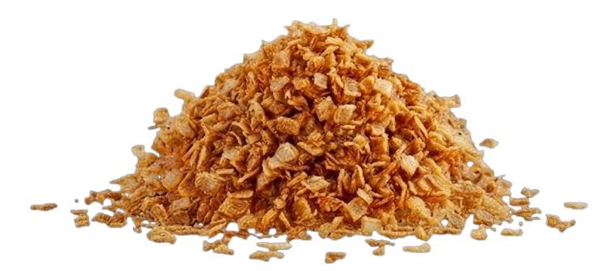

Той самий хруст
Який змінює все!

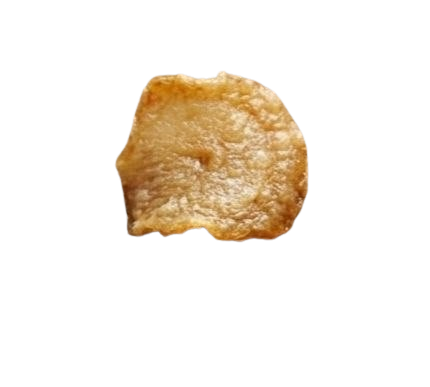
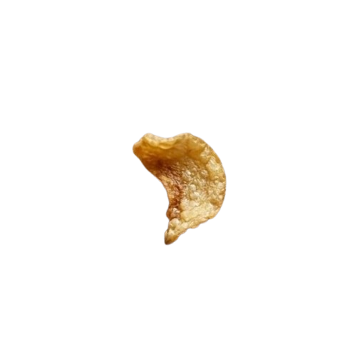
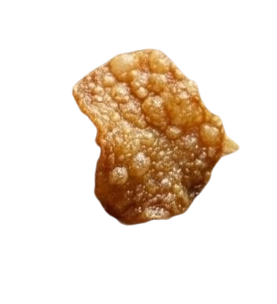
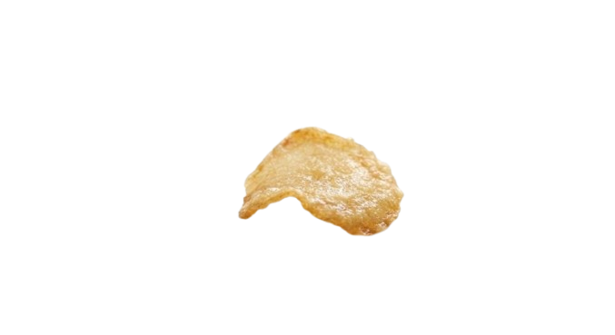
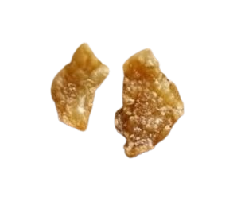
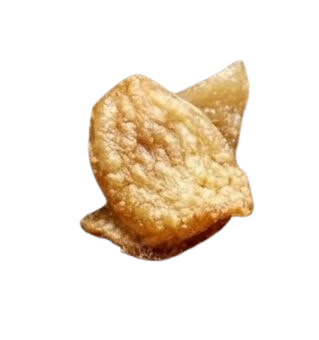
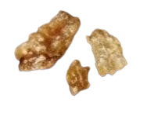
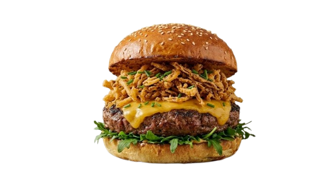
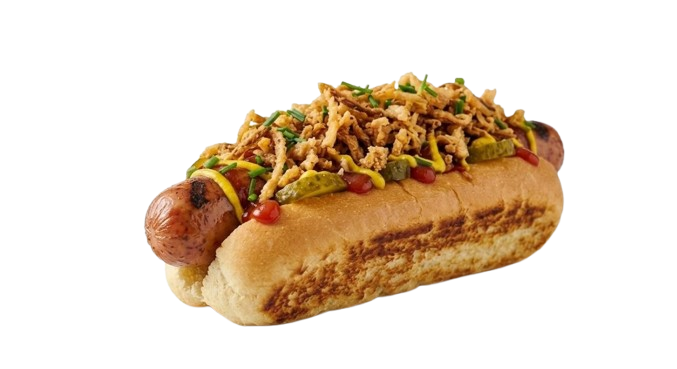
Виробництво цибулі.
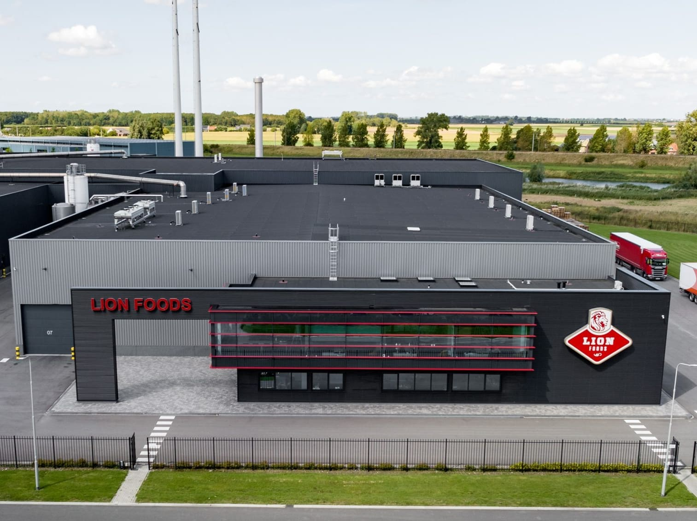
Голландський завод по виробництву смаженої цибулі.
Серце Lion Foods — це високотехнологічний завод у Нідерландах, який поєднує в собі сімейні традиції та передову автоматизацію, де кожен етап – від очищення до фінального пакування – проходить строгий лазерний та оптичний контроль. Унікальна технологія швидкого обсмажування цибулі набуває свого знаменитого хрускоту без надлишків олії. Власні дослідні лабораторії на базі заводу постійно вдосконалюють рецептуру, щоб забезпечити стабільну голландську якість у кожній партії.
Наші переваги.
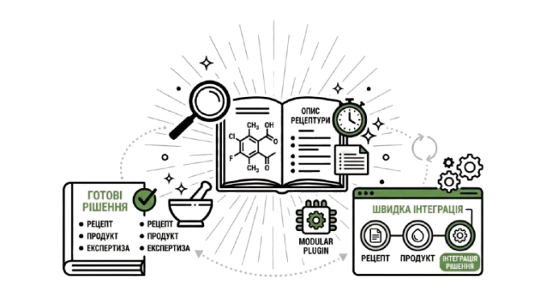
рецептури
Надаємо рецептури, які легко інтегрувати до ваших продуктів.
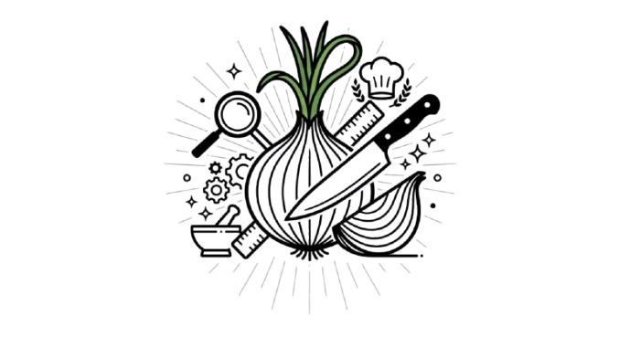
експертиза
Знаємо як зробити цибулю ідеальним інгредієнтом.
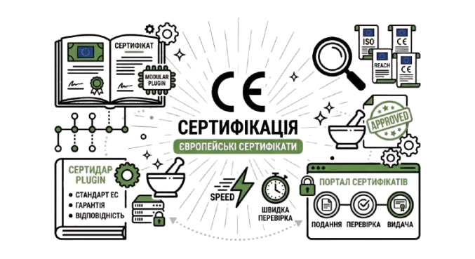
Сертифікація
Якість, підтверджена сертифікатами ЄС.
3 факти про смажену цибулю.
«Від поля до печі» – свіжість місцевого врожаю
Цибуля для Lion Foods вирощується виключно на ретельно відібраних місцевих плантаціях у Нідерландах. Головна особливість у тому, що процес переробки починається відразу після збирання врожаю: цибуля очищюється, нарізується та обсмажується безпосередньо на потужностях Lion Foods, що дозволяє максимально зберегти його природний аромат і той самий фірмовий хрускіт.
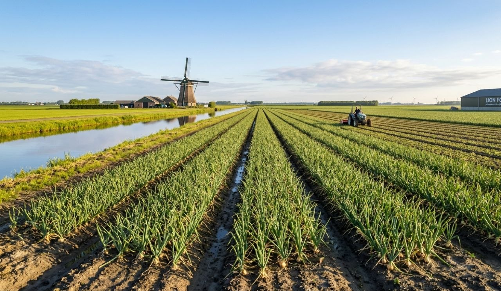
Світовий стандарт у 80 країнах світу
Смажена цибулі від Lion це не просто локальний делікатес, а інгредієнт світового масштабу. Хрустка цибуля Lion Foods поставляється в більш ніж 80 країн і використовується найбільшими міжнародними бургерними мережами (QSR). Вибираючи цю цибулю, Ви отримуєте той самий смак та якість, які цінують шеф-кухарі топових ресторанів у всьому світі.
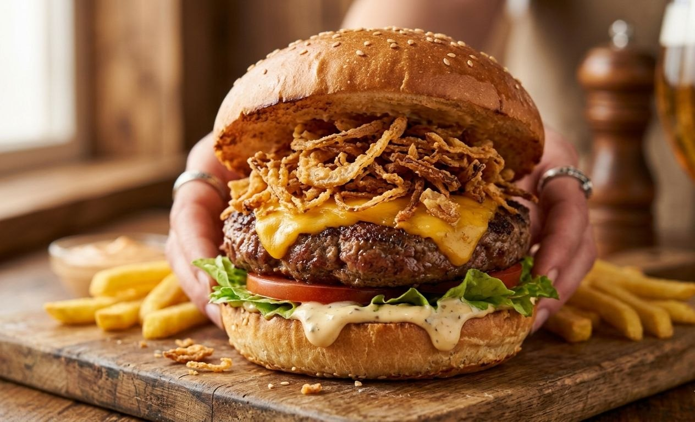
Гарантія найвищої якості (Міжнародна сертифікація)
Lion Foods інвестує в новітні технології та працює за найсуворішими світовими стандартами безпеки харчових продуктів. Це підтверджено сертифікатами найвищого рівня: BRCGS та IFS. Це означає, що кожна фракція цибулі проходить жорсткий контроль якості, що гарантує відсутність домішок, ідеальну текстуру та стабільний смак у кожній партії.
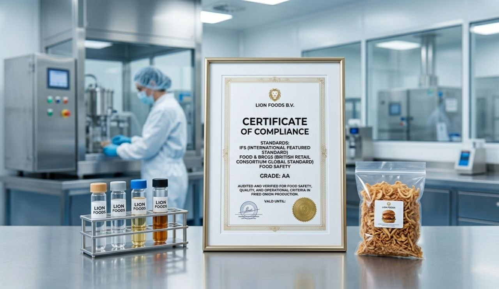
Залиште данні для хрусткої співпраці.
Дякуємо!
Ми зателефонуємо вам найближчим часом.
Графік роботи: Пн-Чт
9:00-18:00
Пт 09:00-17:00
FaQ цибуля ?
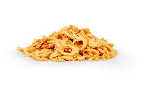
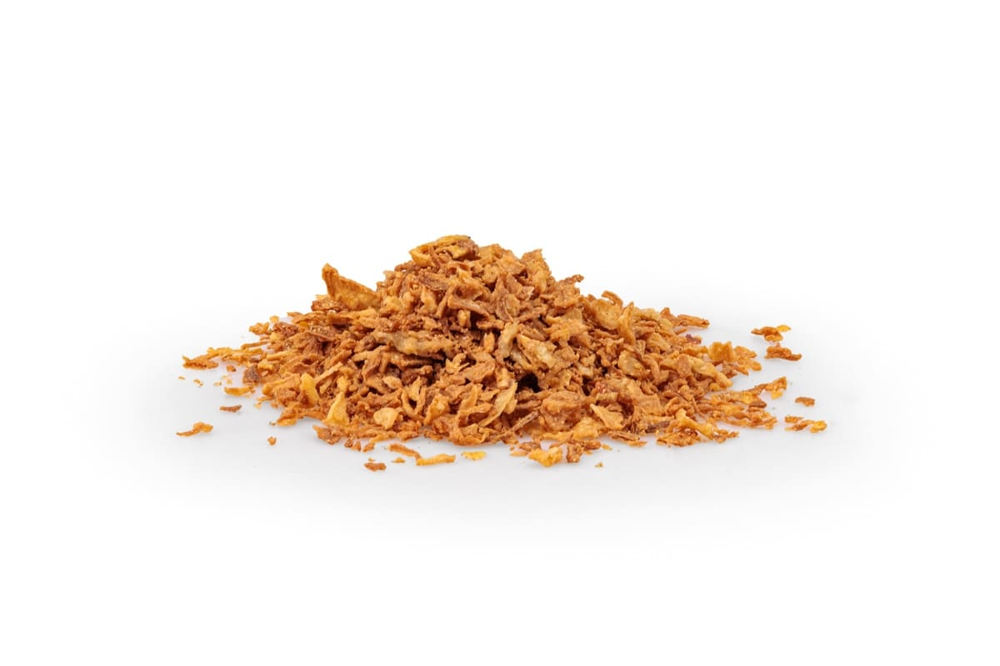
01.
У чому перевага вашої смаженої цибулі перед свіжою?
Наш продукт повністю готовий до вживання. Ви заощаджуєте час на чищенні та нарізці, знижуєте витрати на електроенергію та олію, а також позбавляєтеся від виробничих відходів. Крім того, смажена цибуля має стабільний смак і хрумку текстуру, яких складно добитися при ручному обсмажуванні великих партій.
02.
Який склад продукту і чи використовуються у ньому добавки?
Ми пропонуємо класичний рецепт: добірна цибуля, високоякісна рослинна олія і трохи пшеничного борошна для створення тієї самої хрусткої скоринки. Продукт не містить ГМО та штучних барвників.
03.
Чи залишається цибуля хрумкою після додавання в блюдо?
Так, якщо використовувати його як топінг для хот-догів, бургерів або салатів безпосередньо перед подачею. При термічній обробці всередині соусів або тіста цибуля віддає свій аромат і робить текстуру страви більш насиченою, стаючи м'яким, але зберігаючи виражений смак обсмажування.
04.
Чи надаєте ви сертифікати якості?
Так, наша цибуля відповідає міжнародним стандартам безпеки харчових продуктів. Ми надаємо всі необхідні сертифікати відповідності та якісні посвідчення на кожну партію товару.
05.
У якій фасуванні можна придбати цибулю?
Ми орієнтовані на оптових клієнтів та пропонуємо зручну упаковку по 2,5кг. Це дозволяє оптимізувати складські запаси як невеликим кафе так і великим харчовим виробництвам.
06.
Чи можу я замовити зразки продукції перед великою закупівлею?
Звичайно! Ми впевнені у якості нашої цибулі, тому готові відправити тестовий зразок, щоб ви могли оцінити фракцію, колір і смак продукту у ваших технологічних процесах.